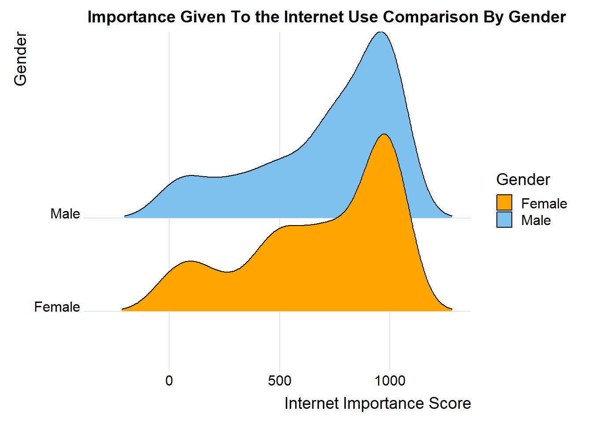
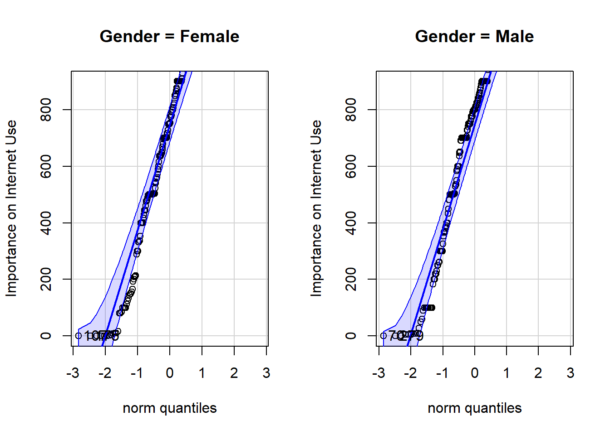

library(tidyverse)
library(DT)
library(pander)
library(readr)
library(car)
library(ggridges)
HSS <- read_csv("HighSchoolSeniors.csv")
#Remember: select "Session, Set Working Directory, To Source File Location", and then play this R-chunk into your console to read the HSS data into R. ##what I would do now
HSS1 <- HSS |>
select(Gender, Importance_Internet_access) |>
filter(Importance_Internet_access <= 1000) |>
drop_na()
ggplot(HSS1, aes(x = Importance_Internet_access, y = Gender, fill = Gender)) +
geom_density_ridges(scale = 2, rel_min_height = 0.01) +
labs(title = "Importance Given To the Internet Use Comparison By Gender",
x = "Internet Importance Score",
y = "Gender") +
scale_fill_manual(values = c("orange", "skyblue2")) +
theme_ridges()
An experiment was conducted to determine if a Gender gives more
importance to internet access than the other (Male & Female). A
sample of 449 High School Seniors was studied. They were asked in a
scale of 0 to 1000 The level of importance they gave to their daily
internet usage. ’
The data is contained in the HSS
data set in R. (See last tab)
It is assumed that the Internet
Access importance mean level by gender is not different from each other.
Symbolically represented by \(\mu_\text{Female} \ = \mu_\text{Male}\).
And graphically represented by the graph above.
Thus, the question being do one gender gives more importance to internet use than the other?
Formally, the null and alternative hypotheses are written as:
\[ H_0: \mu_\text{Importance Given To Internet Use by Females} - \mu_\text{Importance Given To Internet Use by Males} = 0 \] \[ H_a: \mu_\text{Importance Given To Internet Use by Females} - \mu_\text{Importance Given To Internet Use by Males} \neq 0 \]
The significance level for this study will be set at: \[ \alpha = 0.05 \]
An independent sample t test is used to test the previously stated null hypothesis. This allows us to decide if the pattern in the sample data can be assumed to hold for the full population.
pander(
t.test(
Importance_Internet_access ~ Gender,
data=HSS1,
mu=0,
alternative="two.sided",
conf.level = 0.95),
caption="Independent Samples t Test of Internet Use for Males and Females",
split.table=Inf)| Test statistic | df | P value | Alternative hypothesis | mean in group Female | mean in group Male |
|---|---|---|---|---|---|
| -0.9365 | 438.7 | 0.3495 | two.sided | 682 | 710 |
The results of the T-test show that there is insufficient evidence to
reject the null hypothesis (\(p = 0.4351 >
\alpha\)). Thus concluding that importance to internet access is
indifferent of gender in this population sample.
The data from the
experiment showed a higher mean level of importance given to internet
access in the female vs. the male grouyp. However, as demonstrated by
the T-test results. There is insufficient evidence to claim that this
pattern will remain true for the general population, or even for
repeated versions of this study (p = 0.4351).
It is recommended for
more iterations of this test to be taken with different samples, this
may reveal further insights or confirm what was found in this test.
qqPlot(Importance_Internet_access ~ Gender,
data=HSS1,
ylab="Importance on Internet Use",
ylim = c(0, 900))
The assumptions of the test must be shown to explain the considerations taken before conducting this analysis. It is difficult to verify if the sampling distribution of \(\bar{x}_1 - \bar{x}_2\) is normal. However, it is true that if the separate sampling distributions of \(\bar{x}_1\) and \(\bar{x}_2\) are normally distributed, then it follows that the sampling distribution of \(\bar{x}_1 - \bar{x}_2\) will be normally distributed. As long as the population data is normal, it follows that the sampling distribution of the sample mean is normal.
Based on the Q-Q Plots above, it appears that the Internet Use data can be considered normal for each gender, which implies it is okay to assume that \(\bar{x}_1 - \bar{x}_2\) is normally distributed. Even if the Q-Q Plots were considered not normal we could say that based on the central limit theorem we could have a normal distribution of the sample means. Therefore the independent samples t test is appropriate for these data.